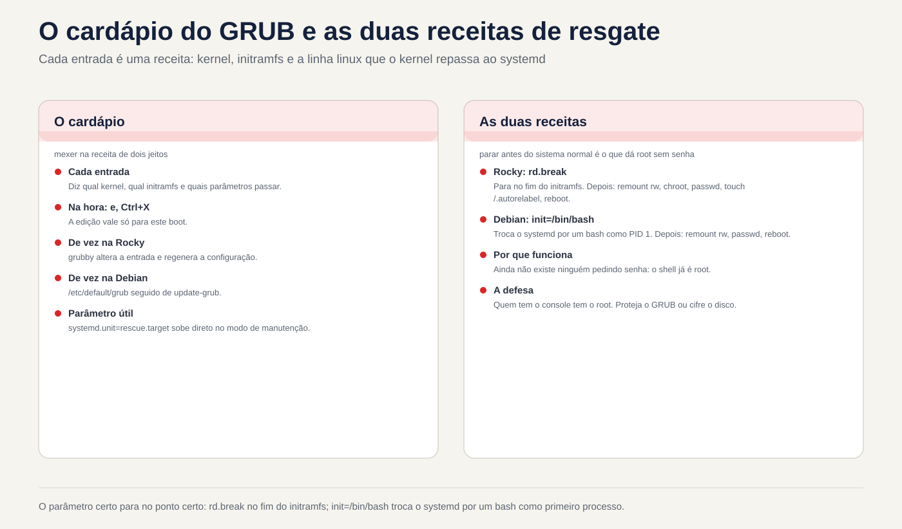
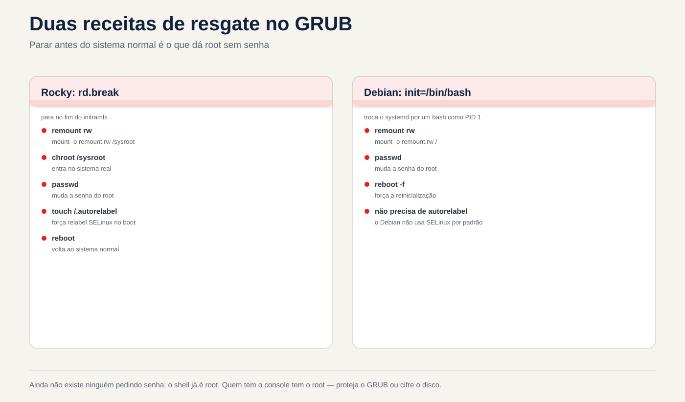

Lezione 4.4 · GRUB e accesso di emergenza
Questa è l'ultima lezione del modulo 4. Sai già che GRUB è il secondo corridore nel relè (4.1) e che puoi avviare la macchina su un target diverso (4.3). Oggi si scherza davvero con GRUB: si cambiano i parametri del kernel solo per un avvio o per sempre, e si recupera la password di root di una macchina a cui nessuno può accedere.
Chiave di questa lezione: nel menu di GRUB,
emodifica la voce eCtrl+Xinizia con la modifica, che si applica solo a quell'avvio. Cambiare in meglio: in Rocky,grubby; in Debian,/etc/default/grubseguito daupdate-grub. Per recuperare la password di root: in Rocky,rd.break, poi rimontare, chroot, passwd etouch /.autorelabel; su Debian,init=/bin/bash, quindi rimontare e passarewd. E la lezione sulla sicurezza: chiunque abbia la console ha il root, a meno che tu non protegga GRUB o crittografi il disco.
| File | |
|---|---|
| Modulo | M4 · Boot e systemd, lezione 4 di 4, che chiude il modulo |
| Quando | Settimana 9 |
| Tempo | circa 1h30, più la sfida del modulo |
| Prerequisito | lezioni da 4.1 a 4.3 |
| Prova | RHCSA (interruzione dell'avvio per riottenere l'accesso, modifica del bootloader) · LPIC-1 101.2 e 102.2 |
| Laboratorio | rock-lab (201) e debian-lab (202), con la console Proxmox aperta |
| Prima di iniziare | backup su PBS delle due VM, oltre allo snapshot |
| Istantanee | m4a4-inicio e m4a4-fim |
1 Riscaldamento
Rispondi dalla tua testa, senza consultare. Le risposte si trovano nella chiave di risposta, alla fine della lezione.
- Quale programma carica il kernel e initramfs in memoria?
- Un parametro immesso nella schermata GRUB è valido per quanti avviamenti?
- Qualcuno con accesso alla console di un server Linux non protetto può diventare root senza conoscere la password?
2 Perché è importante
| Situazione attuale | Cosa risolve |
|---|---|
| Hai preso il controllo di un server e nessuno conosce la password di root | Recupero tramite GRUB |
| Un nuovo kernel non viene caricato dopo l'aggiornamento | Scegliere il kernel precedente dal menu, quindi impostarlo come predefinito |
| Il venditore chiede di disattivare un'opzione del kernel su tutti gli avviamenti | grubby --args o /etc/default/grub |
| L'audit chiede se qualcuno con accesso alla stanza diventa root | Password GRUB e disco crittografato |
3 Modello mentale
GRUB è un menu. Ogni voce di menu è una ricetta: quale kernel, quale initramfs e quali parametri passare al kernel (la riga che inizia con linux). Il kernel legge questi parametri e li passa a systemd. Ecco come funzionava systemd.unit=rescue.target di 4.3.
Puoi modificare la ricetta in due modi:
| Modo | Dove | Dura |
|---|---|---|
| In orario | Nel menu premere il tasto e, poi Ctrl+X | Proprio questo avvio |
| Per sempre | File su disco, quindi rigenerare la configurazione | Tutti gli stivali |
E perché è possibile recuperare la password di root? Perché, se dici al kernel di fermarsi prima del normale avvio del sistema, nessuno ti chiederà comunque la password: ti ritroverai in una shell che è già root. In Rocky, rd.break si ferma alla fine dell'initramfs, prima di cedere il controllo al disco vero e proprio. In Debian, init=/bin/bash sostituisce systemd con bash come primo processo.


4 Gli elementi essenziali
GRUB menu
Subito dopo BIOS/UEFI, il menu viene visualizzato per alcuni secondi. Se non appare, premere Esc o tenere premuto Shift all'inizio dell'avvio. Nel menu:
| Chiave | Fare |
|---|---|
| Frecce | Scegliere l'input (un altro kernel, ad esempio) |
e | Modifica la voce selezionata |
Ctrl+X (o F10) | Si inizia con l'edizione |
Esc | Annulla la modifica e torna al menu |
c | Aprire la riga di comando di GRUB |
Durante la modifica, cerca la riga che inizia con linux e aggiungi il parametro alla fine. Di solito è lungo e si divide in più righe sullo schermo, ma è solo una riga. Usa End o Ctrl+E per andare alla fine.
Tastiera: GRUB e le shell di emergenza utilizzano spesso il layout americano. Se il carattere è sbagliato su una tastiera italiana, = si trova sul tasto ì (il secondo a destra di 0), - sul tasto ' e / sul tasto -. Per lo stesso motivo, usa una password temporanea composta solo da lettere e numeri e cambiala in seguito, con il sistema normale.
Cambiandola una volta in Rocky: grubby
Rocky memorizza una voce per kernel in /boot/loader/entries/ (il formato BLS) e grubby è lo strumento per cambiarle:
sudo grubby --default-kernel
sudo grubby --info=DEFAULT
sudo grubby --info=ALL | grep -E '^(kernel|args)'
sudo grubby --update-kernel=ALL --args="nome=valor"
sudo grubby --update-kernel=ALL --remove-args="rhgb quiet"
sudo grubby --set-default /boot/vmlinuz-VERSÃOPuoi anche modificare /etc/default/grub ed eseguire grub2-mkconfig -o /boot/grub2/grub.cfg, ma nelle versioni attuali di Rocky 9 questo non aggiorna i parametri di kernel già installati (per questo esiste l'opzione --update-bls-cmdline). Pertanto, in Rocky, usa grubby.
Cambia definitivamente in Debian: /etc/default/grub
sudo nano /etc/default/grub # GRUB_TIMEOUT, GRUB_CMDLINE_LINUX_DEFAULT, GRUB_CMDLINE_LINUX
sudo update-grub # governa /boot/grub/grub.cfgupdate-grub è solo una scorciatoia per grub-mkconfig -o /boot/grub/grub.cfg. Non modificare mai grub.cfg a mano: viene generato e il successivo aggiornamento del kernel sovrascrive la modifica. La differenza tra le due variabili: GRUB_CMDLINE_LINUX vale per tutti gli inserimenti, compreso quello di ripristino, mentre GRUB_CMDLINE_LINUX_DEFAULT vale solo per gli inserimenti normali.
Recupera la password di root su Rocky
- Nel menu premere
ee aggiungererd.breakalla fine della rigalinux. PoiCtrl+X. - Cadi in un guscio
switch_root:/#. Il disco reale è montato in/sysroot, sola lettura. - Esegui:
mount -o remount,rw /sysroot
chroot /sysroot
passwd root
touch /.autorelabel
exit
exitIl primo exit esce dal chroot e il secondo continua l'avvio. Poiché il file /.autorelabel esiste, la macchina ricollega l'intero disco a SELinux (impiega alcuni minuti) e si riavvia una volta.
touch /.autorelabel esiste perché passwd riscrive /etc/shadow. Poiché veniva eseguito al di fuori del normale sistema, senza SELinux caricato, il nuovo file nasce senza la giusta etichetta. Con SELinux in modalità enforcing, nessun login con una password può leggere shadow: né quella di root né quella dell'utente. La rietichettatura risolve questo problema. SELinux ha il proprio modulo, più sotto; per ora, memorizza la riga.
Recupera la password di root su Debian
- Nel menu premere
ee aggiungereinit=/bin/bashalla fine della rigalinux. PoiCtrl+X. - Atterri in un
root@(none):/#. La radice è montata sola lettura. - Esegui:
mount -o remount,rw /
passwd root
sync
mount -o remount,ro /
exec /sbin/initO exec /sbin/init scambia bash con systemd e continua l'avvio normale. Qui systemctl reboot non funziona, perché systemd non è in esecuzione. Debian non usa SELinux per impostazione predefinita, quindi non ha bisogno di essere nuovamente codificato.
Proteggiti da questo
Hai appena visto che la console dà root. Esistono tre difese:
- Password GRUB:
grub2-setpasswordsu Rocky. In Debian,grub-mkpasswd-pbkdf2più una voce in/etc/grub.d/40_custom. Pertanto, modificando una voce viene avviata la richiesta di password. - Disco crittografato (LUKS): senza passphrase, nessuno monta il disco, né tramite GRUB né rimuovendo il disco dalla macchina.
- Proteggi la console: password complessa in iLO/IPMI e Proxmox e la stanza è chiusa.
Nel laboratorio, non inserire una password in GRUB: ne avrai bisogno per aprirla sfida.
Rocky × Debian
| Roccioso 9 | Debian 12 | |
|---|---|---|
| Configurazione modificata | /etc/default/grub e le voci in /boot/loader/entries/ | /etc/default/grub |
| File generato | /boot/grub2/grub.cfg | /boot/grub/grub.cfg |
| Strumento quotidiano | grubby | update-grub |
| Recupera radice | rd.break + rimonta /sysroot + chroot + passwd + touch /.autorelabel | init=/bin/bash + rimontare / + passwd + exec /sbin/init |
| Password in GRUB | grub2-setpassword | grub-mkpasswd-pbkdf2 + 40_custom |
Cosa contiene il test
In RHCSA, recuperare la password di root è solitamente la prima cosa da fare: in molte edizioni si riceve una macchina senza password. Dimenticare touch /.autorelabel vanifica l'intero test, perché in seguito non funziona più il login con password. Vengono eliminati anche grubby, i parametri del kernel e il kernel predefinito. In LPIC-1 101.2 e 102.2: i tasti menu, /etc/default/grub, grub-mkconfig e update-grub, i parametri del kernel all'avvio e, in teoria, grub-install (che installa GRUB su disco) e le differenze per GRUB Legacy (menu.lst).
5 Laboratorio guidato
Passo 0 · Backup, snapshot e console
Oggi tu cambiare ciò che fa accendere la macchina. Pertanto, oltre allo snapshot, effettuare un backup su PBS. Nella shell del nodo Proxmox:
pvesm status # trovare il nome dell'archivio PBS
vzdump 201 --storage NOME_DO_PBS --mode snapshot
vzdump 202 --storage NOME_DO_PBS --mode snapshot
qm snapshot 201 m4a4-inicio
qm snapshot 202 m4a4-inicioSe preferisci, esegui il backup tramite l'interfaccia: VM, poi Backup, poi Backup now, scegliendo lo storage PBS. Quindi, apri la console (noVNC) di entrambe le VM e lasciala aperta. In ogni VM:
mkdir -p ~/lab44 && cd ~/lab44Passo 1 · Conoscere il GRUB di ognuno
In Rocky-Lab:
cat /proc/cmdline
sudo grubby --default-kernel
sudo grubby --info=DEFAULT
ls /boot/loader/entries/
grep -v '^#' /etc/default/grubIn Debian-Lab:
cat /proc/cmdline
grep -v '^#' /etc/default/grub | grep .
ls -l /boot/grub/grub.cfgNota in ~/lab44/notas.txt: quanti kernel ha ciascuno, qual è l'impostazione predefinita e il timeout del menu.
Passo 2 · Modificare solo per un avvio
Riavviare Rocky-Lab e guardare la console. Nel menu, premere e, andare alla fine della riga linux, aggiungere systemd.unit=rescue.target e premere Ctrl+X.
La macchina va in salvataggio, come in 4.3, ma questa volta senza che voi abbiate cambiato nulla sul disco. Immettere la password root e verificare:
cat /proc/cmdline
systemctl get-defaultIl valore predefinito rimane multi-user.target: il parametro di avvio è scaduto. Riavviare con systemctl reboot, senza toccare nulla nel menu. La macchina ritorna alla normalità e cat /proc/cmdline non mostra più il parametro: la modifica valeva un singolo avvio.
Passo 3 · Cambia definitivamente
Rocky: rimuovi rhgb quiet per vedere i messaggi di avvio. Questo è quello che vuoi su un server che non si avvia.
sudo grubby --update-kernel=ALL --remove-args="rhgb quiet"
sudo grubby --info=ALL | grep -E '^(kernel|args)'
sudo systemctl rebootNella console, ora vedi passare i messaggi del kernel e di systemd.
Debian: aumenta il tempo del menu. In /etc/default/grub modificare GRUB_TIMEOUT=5 in GRUB_TIMEOUT=10 e salvare. Non eseguire ancora update-grub.
Decidi 1
Hai salvato /etc/default/grub con GRUB_TIMEOUT=10 e riavvierai debian-lab senza eseguire update-grub. Quanto tempo attende il menu?
- A) 10 secondi, perché il file è stato salvato.
- B) 5 secondi, perché non è cambiato nulla in ciò che legge GRUB.
- C) Il menu non viene nemmeno visualizzato, perché la configurazione è diventata incoerente.
Controllare prima un'opzione. Quindi riavviare e impostare l'ora nella console.
| Se hai selezionato | Risultato | Perché |
|---|---|---|
| A | Sbagliato | GRUB non legge /etc/default/grub. Si legge /boot/grub/grub.cfg, che è ancora il vecchio |
| B | Capito bene | /etc/default/grub è proprio la ricetta per generare grub.cfg, e chi la genera è update-grub |
| C | Sbagliato | Non c'è alcuna incoerenza: il vecchio grub.cfg rimane valido |
Ora applica e controlla:
sudo update-grub
grep -m1 'timeout=' /boot/grub/grub.cfg
sudo systemctl rebootPer correggere: in Debian, modificato /etc/default/grub, esegui update-grub. Su Rocky, preferisci grubby, che scrive direttamente sugli input.
Passo 4 · Recupera la password di root su Rocky
Fai finta che nessuno conosca la password di root di Rocky-lab. Dalla console, riavvia. Nel menu premere e e aggiungere rd.break alla fine della riga linux. Poi Ctrl+X. Arrivi su switch_root:/#.
Decidi 2
Prima di ogni altra cosa, esegui chroot /sysroot e poi passwd root. Cosa succede?
- A) La password cambia normalmente.
- B)
passwdfallisce con un errore come Errore di manipolazione del token di autenticazione. - C) La macchina si blocca con un kernel panico.
Controllare prima un'opzione. Quindi eseguilo e guarda cosa succede.
| Se hai selezionato | Risultato | Perché |
|---|---|---|
| A | Sbagliato | /sysroot è montato in sola lettura e passwd deve scrivere in /etc/shadow |
| B | Capito bene | Senza il rimontaggio per la lettura e la scrittura, la scrittura sul disco non funziona |
| C | Sbagliato | Un errore di registrazione è solo un errore: il kernel è ancora in piedi |
Esci dal chroot con exit ed esegui la sequenza corretta:
mount -o remount,rw /sysroot
chroot /sysroot
passwd root
touch /.autorelabel
exit
exitAttendi la nuova codifica e il riavvio automatico. Successivamente, nella console, accedi come root con la nuova password e controlla:
getenforce # Applicazione
ls -Z /etc/shadow # shadow_t dovrebbe apparireInfine cambiare la password temporanea con passwd root in una permanente. Ora la tastiera è nel layout corretto.
Da risolvere: l'ordine è rimonta, chroot, passwd, autorelabel, exit ed exit. Se si salta il rimontaggio, passwd fallisce. Se si salta l'autorelabel, l'intero test va con sé.
6 Break and fix
In Rocky-Lab, da SSH:


sudo grubby --update-kernel=ALL --args="systemd.unit=emergency.target"
sudo systemctl rebootLa macchina va in emergenza ad ogni avvio. Investiga attraverso la console: systemctl get-default cosa mostra? Dov'è la causa? /boot è montato? Il root accetta la scrittura?
Sono disponibili due percorsi di riparazione. Scegline uno e poi prova l'altro:
- Con GRUB: nel menu,
e, eliminasystemd.unit=emergency.targetdalle righelinuxeCtrl+X. La macchina si alza normalmente, solo questa volta. Quindi, tramite SSH, eseguiresudo grubby --update-kernel=ALL --remove-args="systemd.unit=emergency.target". - Dall'emergenza: il root è di sola lettura e
/bootnon è montato, quindigrubbynon ha nessun posto dove scrivere. Esegui:
mount -o remount,rw /
mount /boot
grubby --update-kernel=ALL --remove-args="systemd.unit=emergency.target"
systemctl rebootLa lezione: quando get-default dice una cosa e la macchina ne fa un'altra, guarda /proc/cmdline. Un parametro di avvio sovrascrive la destinazione predefinita.
7 Insidie
- Dimenticare
touch /.autorelabelin Rocky. Dopo il riavvio, non funziona l'accesso tramite password. Correzione:rd.breakdi nuovo, e questa volta con autorelabel. - Dimentica il rimontaggio. Sia
/sysrootsu Rocky che/su Debian iniziano in sola lettura. - Modifica
grub.cfga mano. Il successivo aggiornamento del kernel cancella la modifica. - Modifica
/etc/default/grube non eseguireupdate-grub. Non cambia nulla. - In Rocky, modifica solo
/etc/default/grub. I kernel già installati non ricevono la modifica. Usagrubby. - Tastiera americana in GRUB e shell di emergenza. La password che hai inserito potrebbe non essere quella che pensi. Utilizzare una semplice password temporanea e modificarla in seguito.
systemctl rebootininit=/bin/bash. Non funziona perché systemd non è in esecuzione. Usaexec /sbin/init.- Invia SMS con GRUB e non riavviare per testare. Prova mentre hai la console e il tempo, non il giorno dell'arresto anomalo.
8 Quiz
- In Debian, dove si modifica l'ora del menu di GRUB e quale comando applica la modifica?
- In Rocky, come si aggiunge un parametro del kernel a tutti i kernel installati?
- Perché Rocky ha bisogno di
touch /.autorelabele Debian no? - Dopo
rd.break, perché è necessario rimontare/sysroot? - Nel menu di GRUB, quale tasto modifica la voce e quale inizia con modifica?
- Nominare due misure che impediscono a qualcuno con accesso alla console di reimpostare la password di root tramite GRUB.
9 Cola
Da sapere a memoria
| Comando o tasto | Fare |
|---|---|
e / Ctrl+X | Modifica la voce / inizia con la modifica |
cat /proc/cmdline | Mostra con quali parametri è stato creato il kernel |
grubby --info=DEFAULT | Mostra il kernel e i parametri predefiniti (Rocky) |
grubby --update-kernel=ALL --args= / --remove-args= | Aggiungere o rimuovere parametri (Rocky) |
/etc/default/grub + update-grub | Cambiarlo per sempre (Debian) |
rd.break → rimonta /sysroot → chroot → passwd → touch /.autorelabel | Recupera root (Rocky) |
init=/bin/bash → rimonta / → passwd → exec /sbin/init | Recupera root (Debian) |
Consultare
grubby --set-default, grub2-mkconfig -o /boot/grub2/grub.cfg, --update-bls-cmdline, GRUB_CMDLINE_LINUX e GRUB_CMDLINE_LINUX_DEFAULT, /boot/loader/entries/, grub2-setpassword, grub-mkpasswd-pbkdf2, /etc/grub.d/40_custom, grub-install, ls -Z, getenforce.
Flashcards
| Domanda | Rispondi |
|---|---|
GRUB legge /etc/default/grub? | No: legge il grub.cfg generato da esso |
Dov'è il vero record dopo rd.break? | In /sysroot, sola lettura |
Cosa risolve il .autorelabel? | Il tag SELinux di /etc/shadow e il resto del disco |
Chi vince: il bersaglio standard o lo stivale systemd.unit=? | Il parametro di avvio |
| Qual è la difesa contro la reimpostazione della password tramite la console? | Password in GRUB e disco crittografato |
10 Checklist e chiusura
- [ ] Ho modificato una voce nel menu solo per un boot
- [ ] Ho cambiato parametri una volta per tutte con
grubbyin Rocky - [ ] Ho cambiato il timeout in Debian e ho capito perché
update-grubè obbligatorio - [ ] Ho recuperato la password dalla root di Rocky, e SELinux continua a applicare
- [ ] Ho riparato una macchina bloccata in emergenza in entrambi i sensi
- [ ] Conosco le tre difese contro la reimpostazione della password tramite la console
Ultimo esercizio, senza guardare la lezione: in debian-lab, ritorna GRUB_TIMEOUT a 5, applica e conferma in grub.cfg. Su Rocky-Lab, decidi se rivuoi indietro rhgb quiet. Molti amministratori preferiscono un server che ne sia sprovvisto. Se lo vuoi indietro, usa grubby.
Riavvia e conferenza: riavvia entrambe le VM e controlla:
cat /proc/cmdline
systemctl is-system-running # corsa
ls ~/lab44Istantanea della fine, sul nodo Proxmox:
qm snapshot 201 m4a4-fim
qm snapshot 202 m4a4-fim11 Nella vita reale
Missione, sola lettura. Su un server reale che amministri, esegui semplicemente questi comandi, che non cambiano nulla.
In Rocky o su RHEL:
cat /proc/cmdline
sudo grubby --info=DEFAULT
sudo test -f /boot/grub2/user.cfg && echo "GRUB com senha" || echo "GRUB sem senha"
lsblk -f | grep -i cryptoSu Debian:
cat /proc/cmdline
grep -v '^#' /etc/default/grub | grep .
sudo grep -c password_pbkdf2 /boot/grub/grub.cfg
lsblk -f | grep -i cryptoRisposta: GRUB ha una password? Il disco è crittografato? Chi ha accesso alla console di questo server (iLO, Proxmox, la stanza)? Se la risposta è "chiunque abbia la password Proxmox diventa root qui", prendi nota di questo rischio e parla con la persona responsabile. Non cambiare nulla da solo.
Diario: scrivi tre righe su ciò che hai imparato oggi e una domanda che ti è rimasta.
Domani, senza guardare:
- Scrivi la sequenza completa di recupero di Rocky root.
- Indica quale file GRUB legge effettivamente, in Rocky e Debian.
- Spiega in una frase perché
rd.breakfornisce una shell di root senza chiedere una password.
12 Scava più a fondo a tuo piacimento
- La riga di comando di GRUB (
c):ls,set root=,linux,initrdeboot, per avviare manualmente una macchina con il menu interrotto. - Reinstalla GRUB da un'ISO, con
grub-installegrub2-mkconfigall'interno di un chroot. - UEFI e Secure Boot:
shim,mokutil --sb-stateeefibootmgrdalla 4.1. - Ritorno automatico al kernel precedente:
GRUB_DEFAULT=saved,grub2-set-defaultegrub2-editenv list. - Proteggi GRUB con una password in una VM di prova, per avere un'idea del menu.
In DeepTutor: !explica rd.break e init=/bin/bash, !feynman por que o autorelabel existe, !quiz GRUB e recuperação de root.
La sfida del modulo 4
Il modulo 4 si chiude con l'attività che rientra maggiormente in RHCSA e che salva la maggior parte dei server nella vita reale: recuperare la password root delle due VM, senza guardare la lezione.
Prima di: sul nodo Proxmox, eseguire qm snapshot 201 m4-desafio e qm snapshot 202 m4-desafio.
Regole:
- Utilizzare solo la console Proxmox, no SSH.
- Non consultare la lezione, Cola o DeepTutor. Se si blocca, sono disponibili suggerimenti nella chiave di risposta.
- Tempo previsto: 15 minuti per VM, senza contare la rietichettatura.
È pronto quando:
| V.M. | Criterio |
|---|---|
| laboratorio-roccioso | Root accede alla console con la nuova password |
| laboratorio-roccioso | getenforce mostra Enforcing e ls -Z /etc/shadow mostra shadow_t |
| laboratorio-roccioso | L'utente abituale inserisce anche la password |
| debian-lab | Root accede alla console con la nuova password |
| debian-lab | systemctl is-system-running mostra running |
Bonus: scrivi in cinque righe, nel tuo diario, perché funziona e come impedire a un estraneo di fare lo stesso.
Se va storto: qm rollback 201 m4-desafio (o 202) riporta la VM allo stato in cui era prima e riprovi. Commettere errori qui è economico: commettere errori nel test, o sul server di un cliente, non lo è.
Con questo, il modulo 4 è completato: sai come Linux si accende, invia servizi, cambia modalità ed entra in una macchina bloccata.
Risposta commentata
Riscaldamento
- GRUB, il secondo corridore della staffetta 4.1.
- Solo uno stivale. Al successivo avvio, ciò che è presente sul disco sarà nuovamente valido.
- SÌ. Tramite GRUB, con
rd.breakoinit=/bin/bash. Non puoi farlo se GRUB ha una password o il disco è crittografato.
Quiz
- Nella variabile
GRUB_TIMEOUTdi/etc/default/grube si applica consudo update-grub. sudo grubby --update-kernel=ALL --args="nome=valor".- Rocky usa SELinux in modalità enforcing.
passwdè stato eseguito senza la policy caricata, quindi il nuovo/etc/shadowè stato lasciato senza l'etichetta corretta e SELinux ne blocca la lettura al momento del login. Debian non utilizza SELinux per impostazione predefinita e il suo AppArmor non si basa sui tag dei file. - Perché initramfs monta effettivamente il disco in
/sysrootdi sola lettura epasswddeve scrivere su/etc/shadow. emodifica eCtrl+X(oF10) inizia con la modifica.- Una password GRUB, quindi le voci di avvio non possono essere modificate e crittografia dell'intero disco con LUKS, quindi il disco non può essere letto senza la passphrase. La protezione fisica della console (iLO/IPMI, accesso all'hypervisor, sala server) è il terzo livello.
Suggerimenti per la sfida
Leggi solo se rimane bloccato.
- Il
passwdnon è riuscito: hai dimenticato il rimontaggio per la lettura e la scrittura. - In Rocky, nessuno entra dopo il riavvio:
touch /.autorelabelmancava. Ripetere l'intero processo. - Su Debian,
systemctl rebootnon funziona: systemd non è in esecuzione. Usaexec /sbin/init. - La nuova password dopo non funziona: era la tastiera americana. Ripetere con una password composta da lettere e numeri.